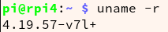

The hardware driver development is involved in the operating system programming.
Prerequisites
Before we start the driver development, the Linux kernel has to be manually built at least once. So the next two ways will be introduced for building Pi linux kernel, one way is to self compile on Raspberry Pi, another is to compile it on a host Linux computer and then copyed to RPi. First of all, download the linux kernel package Raspberry github’s page: https://github.com/raspberrypi/linux/releases with the same version as your Raspbian Linux version. You can check your Raspbian linux version by

My current raspbian linux kernel version is v4.19.57(2019-07-25), so I download 4.19.y linux.
Cross compile on Arch Linux
Download or git clone and ‘tools’ repository from1
git clone --depth=1 https://github.com/raspberrypi/tools ./tools
For Arch Linux, some basic packages for cross-compiling are required and can be installed by sudo pacman -Syu bison flex openssl p7zip. Use 7z x rather than unzip to extract linux kernel file(unzip somewhat doesn’t support very long full path). Then manually copy the config file from the running pi to the source code tree and configure it further:1
2
3cd linux
KERNEL=kernel7
make bcm2709_defconfig
Error: Can’t find default configuration “arch/x86/configs/bcm2709_defconfig”!
It’s reseasonable because this config file hasn’t been created. So 1st method is to generate one:
1 | make ARCH=arm CROSS_COMPILE=arm-linux-gnueabihf- bcm2709_defconfig |
2nd alternative method is to copy one from rpi. On RPi:1
2sudo modprobe configs
sudo cp /proc/config.gz ~/Documents
Back Arch1
2
3
4
5
6scp -P2022 pi@raspberry:~/Documents/config.gz [directory/of/linux]
zcat config.gz > .config
make ARCH=arm CROSS_COMPILE=../tools/arm-bcm2708/gcc-linaro-arm-linux-gnueabihf-raspbian-x64/bin/arm-linux-gnueabihf- zImage -j4
make ARCH=arm CROSS_COMPILE=../tools/arm-bcm2708/gcc-linaro-arm-linux-gnueabihf-raspbian-x64/bin/arm-linux-gnueabihf- modules -j8
make ARCH=arm CROSS_COMPILE=../tools/arm-bcm2708/gcc-linaro-arm-linux-gnueabihf-raspbian-x64/bin/arm-linux-gnueabihf- dtbs -j4
Type enter for default settings when encounting input waiting.
Insert RPi TF card and check it via lsblk, then mount1
2
3
4
5
6
7
8
9
10
11sudo mkdir /mnt/fat32
sudo mkdir /mnt/ext4
sudo mount /dev/sdb6 mnt/fat32
sudo mount /dev/sdb7 /mnt/ext4
sudo make ARCH=arm CROSS_COMPILE=../tools/arm-bcm2708/gcc-linaro-arm-linux-gnueabihf-raspbian-x64/bin/arm-linux-gnueabihf- INSTALL_MOD_PATH=/mnt/ext4 modules_install
KERNEL=kernel7
ls /mnt/fat32 -l | grep img
sudo cp arch/arm/boot/zImage /mnt/fat32/kernel-myconfig.img
sudo cp arch/arm/boot/dts/*.dtb /mnt/fat32/
sudo cp arch/arm/boot/dts/overlays/*.dtb* /mnt/fat32/overlays
sudo cp arch/arm/boot/dts/overlays/README /mnt/fat32/overlays
sudo edit /mnt/fat32/config.txt file:1
kernel=kernel-myconfig.img
1 | sudo umount /mnt/fat32 |
Re-insert TF card into Pi and start, type uname -r to check. It’s 4.19.64+. Succeed~
Self compile on RPi4
ssh into pi and scp those two folders.
extract and enter ‘linux-rpi-x.xx.x’ and type1
2
3sudo apt install bc bison flex libssl-dev
KERNEL=kernel7l
make bcm2711_defconfig

1 | make -j4 zImage modules dtbs |
Check the new kernel version:
LED driver Experiment
Makefile1
2
3
4
5
6
7
8
9ifneq ($(KERNELRELEASE),)
obj-m :=hello.o
else
KERNELDIR :=/home/shane/Downloads/Raspberry-Pi/linux/
all:
$(MAKE) -C $(KERNELDIR) M=$(PWD) ARCH=arm CROSS_COMPILE=/home/shane/Downloads/Raspberry-Pi/tools/arm-bcm2708/gcc-linaro-arm-linux-gnueabihf-raspbian-x64/bin/arm-linux-gnueabihf- modules
clean:
rm -rf *.o *~ core .depend .*.cmd *.ko *.mod.c .tmp_versions modul*
endif
make and then scp hello.ko file. On RPi1
2
3sudo insmod hello.ko
sudo rmmod hello
dmesg | tail -5
[ 7804.521916] smsc95xx 1-1.1:1.0 enxb827eb802252: link down
[ 7839.258242] smsc95xx 1-1.1:1.0 enxb827eb802252: link up, 100Mbps, full-duplex, lpa 0xCDE1
[ 8655.103844] hello: loading out-of-tree module taints kernel.
[ 8655.110062] Hello, world
[ 8726.505905] Goodbye, world
Procedures conclusion
- Write a driver file
- Compile, build and
sudo insmod some-name.ko - Write the test test
- Compile, build and
sudo ./test
References
https://www.raspberrypi.org/documentation/linux/kernel/building.md